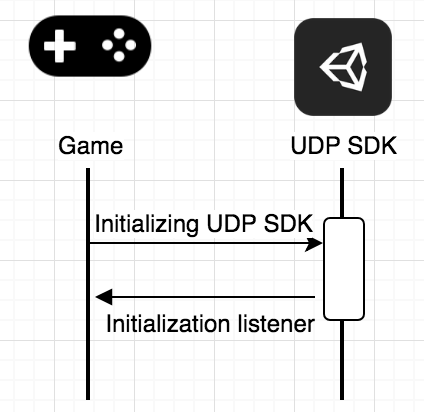
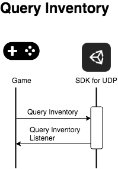
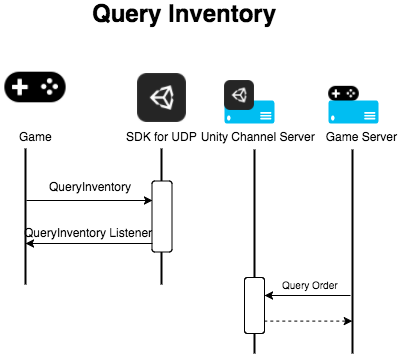
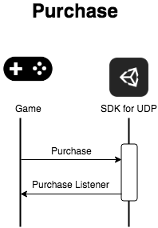
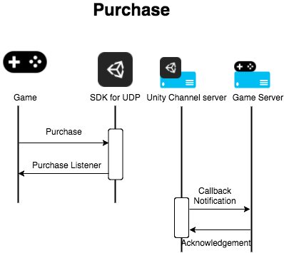
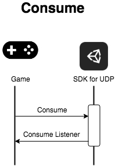

To integrate your games with UDP, follow these steps:
- Initialize UDP SDK
- Query the UDP inventory to check for payment
- Send a purchase request to UDP
- Send a consume request to UDP
Initializating UDP SDK#
To initialize UDP SDK, your game provides the Unity client ID and Unity client key to the UDP SDK. The initialization listener will let you know whether the initialization succeeds by returning a success or failure message.

Checking the payment#
To prevent a product being paid for but not delivered, your game needs to query the partner stores’ inventory after the initialization is completed. This allows you to, for example, restore non-consumable products when your game is reinstalled.
Your game checks whether there is an unconsumed product by calling the QueryInventory method immediately after the initialization succeeds.

If your game is an online game, your game server can check the order status in the Unity Channel server.

See Querying for specified products or all unconsumed products for additional details.
Sending a purchase request to UDP#
Your game start a purchase by calling the Purchase method. The UDP automatically checks the purchase receipt to see whether the purchase is valid.

If your game is an online game, you can verify the purchase on your gameserver, as follows:
- Receiving the purchase callback notification from the UDP server or directly from the channel server which is optionally of some channels.
- Querying the order from the UDP server with a signature. For some channel, your server need to send an acknowledgement of the callback notification.

Sending a consume request to the UDP SDK#
To complete the consumable purchase, your game sends a Consume request to the UDP SDK. We recommend that your game delivers the product after it has been consumed, or the product may be delivered repeatedly.
Note: This step is only necessary when the product is consumable.

See Consuming a purchase for additional details.